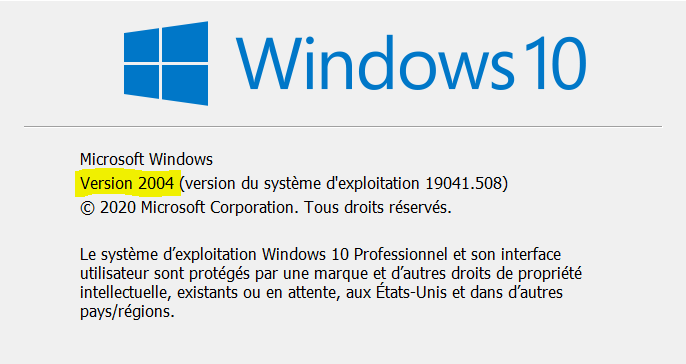
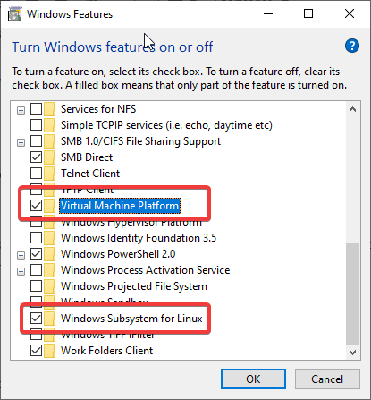

2 Install WSL 2 and configure it on Windows 10
2.1 Prerequisites
The only prerequisites of this part is to have a Windows 10 laptop running at least the 2004 version. You don’t need to have Windows 10 Professional.
You can check that by typing winver in the Start menu.

If you don’t have the 2004 version you’ll need to upgrade your Windows laptop because the WSL 2 only work on it.
You can do so with Windows Update : fetch the latest updates and upgrade your computer before you continue.
From now I will assume that you have the Windows 10 version 2004.
The WSL 2 is not by default activated on your computer, you need to activate it.
There are two ways of doing so : the command line way and the GUI way.
2.2 Activate WSL 2 and Virtual Machine Platform using Powershell
For the command line approach you need to Open PowerShell as an administrator and type the following commands :
# Enable the WSL2 without reboot
dism.exe /online /enable-feature /featurename:Microsoft-Windows-Subsystem-Linux /all /norestart
# Enable the Virtual Machine Platform
dism.exe /online /enable-feature /featurename:VirtualMachinePlatform /all /norestart
2.3 Activate WSL 2 and the Virtual Platform via the Graphical User Interface
Alternatively to the Powershell approach where you execute the code above, you can activate both WSL 2 and the Virtual Platform using the Graphical User Interface provided by your Windows OS.
Open the start menu and type "turn on windows features …. You’ll be redirected to a screen similar to this :

Select both Windows Subsystem for Linux & Virtual Machine Platform and click [OK] to validate.
It may require you to reboot your computer. Make sure you save all your opening works before rebooting your computer.
2.4 Making WSL 2 default
Since WSL 2 is new, it may be the default on your computer. In fact you can still use WSL 1 alongside WSL 2. But is is recommanded to switch to WSL 2 for the lots of benefits enumerated on the Comparing WSL 1 & WSL 2 page.
To do so you just need to open Powershell and execute the following commands :
wsl --set-default-version 2Any ditributions you will install are going to use WSL 2 by default.